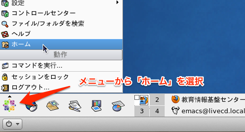

第4回 アカデミックスキルI レポートの作成技術(2)
Table of Contents
1 このページの更新履歴
2 Emacs でファイルを作って保存してみよう
2.1 Emacs を起動する
- 左下のメニューから ユーティリティ→エディタ→Emacs を選択
2.2 新しいバッファを開く
- Emacs 上で
C-x C-fとすると，新しいバッファを開き，そこにファイルの内容を表示させられる - ミニバッファに
Find file: ~と表示されるので，これをFind file: ~/brank.texとなるように修正してRET - 入力されたファイル名(
brank.txt)が存在する場合はそのファイルの内容が開かれる - 当該ファイルが無い場合は，新しいバッファが開かれる
2.3 バッファを編集して保存する
- 開いたバッファのモードラインにファイル名(
brank.tex)と表示されているのを確認し，適当な文字列を入力 - モードラインの記号が
**となっているのを確認(--: 変更なし**: 変更あり)． C-x C-sとすると，当該ファイル名でバッファを保存- 保存が完了するとモードラインの記号が
--となるので，確認
3 LaTeX ファイルを作成し，コンパイルしてみよう
3.1 tex_sample.tex というバッファを作成する
- 上述の方法で
tex_sample.texというファイル名でバッファを作成する tex_sample.texに以下の内容をコピー＆ペースト(C-y)する- 保存(
C-x C-s)する
3.2 tex_sample.tex をコンパイルして tex_sample.dvi を作成する
- Emacs 上で
M-!(ALT と Shift を押しながら1)とする - ミニバッファに
Shell Command:と表示されるので，その後にplatex tex_sample.tex
と入力して
RETする． - フレームが上下に分割され，下側のウィンドウにコンパイル結果が表示される. ここで
C-x oとすればウィンドウを切り替えられる.C-M-vやC-M-S-vとすると別のウィンドウをスクロールさせられる． - 出力結果の最後に以下が表示されていれば，コンパイルが完了している．
Output written on tex_sample.dvi (1 page, 1608 bytes). Transcript written on tex_sample.log.
- 出力結果の最後に以下が表示されている場合は，コンパイルが失敗している．
No pages of output. Transcript written on texput.log.
3.3 tex_sample.dvi を tex_sample.pdf に変換する
tex_sample.dviが生成されていることを確認する.C-x C-fでtex_sampleまで入力してTABキーを押すと,tex_sampleで始まるファイル名が表示される．この中にtex_sample.dviが無ければ，何らかの理由でコンパイルに失敗しているので，もう一度tex_sample.texの生成からやり直す．tex_sample.dviが存在するなら,M-!としてShell command:の後にdvipdfmx tex_sample.dvi
と入力して
RETするとミニバッファに変換結果が表示される．- 変換結果に
tex_sample.dvi -> tex_sample.pdf [1] 32789 bytes written
と表示されれば正常に完了．
- 変換結果に
tex_sample.dvi -> tex_sample.pdf ** ERROR ** Could not open specified DVI file: tex_sample.dvi Output file removed.
などと表示された場合は，何らかの問題が生じていて変換できていない．
3.4 変換された tex_sample.pdf を開く
- Cent OS の左下のメニュー→ホームを選択すると
~/に対応するフォルダが表示される．
- 生成された PDF ファイル(
tex_sample.pdf) を見つけてダブルクリックすると PDF が開かれる．
4 LaTeX ファイルから PDF ファイルを作る前のチェック
4.1 ファイルは保存されているか？
- モードラインの記号が
**となっている場合は，ファイルが保存されていない．C-x C-sとして保存しよう． - 保存が完了するとモードラインの記号が
--になる．
4.2 ファイルは存在するか？
platexを使ったコンパイルに失敗すると，dvi ファイルが生成されない．存在しないファイルに対してdvipdfmxを行なっても，当然，何も処理されない．platexを行なう前に,tex_sample.texが存在しているか確認しよう．dvipdfmxを行なう前に,tex_sample.dviが存在しているか確認しよう．- ファイルが存在するかどうか確認する方法：
-
C-x C-d(list-directory) List directory (brief): ~/
フォルダ名(デフォルトでは現在のフォルダ)を入力して
RETすると，当該フォルダ内のファイル一覧が表示される．-
M-x find-name-dired Find-name (directory): ~/フォルダ名(デフォルトでは現在のフォルダ)を入力して
RETすると，Find-name (filename wildcard):と表示されるので，ファイル名を入力して
RETすると，指定したフォルダ下の該当する全てのファイルを表示してくれる．wildcard というのは七並べのジョーカーや UNO のワイルドカードのような「どんな文字にもなれる特殊な文字」で，以下の2種類がある．
* 任意の長さの文字 ? 任意の1文字
例えば，ファイル名を
tex_sample*
とすれば,
tex_sampleで始まる全てのファイル名を表示してくれるし，*.pdf
とすれば,
pdfで終わる全てのファイル名を表示してくれる．
-
4.3 ファイル名は正しいか？
- TeXファイル(
.tex)とplatexの引数に与えているファイル名は同じものだろうか？ TAB補完(ファイル名を途中まで入力してTABを押す)ができる場合は積極的に使おう- よくある間違い
- 大文字/小文字を間違える(e.g.
TEX_sample.tex) _(アンダーバー)と-(ハイフン),1とl,0とoなど- 拡張子(
.tex)を忘れる(うまく動くこともある)
- 大文字/小文字を間違える(e.g.
4.4 LaTeX のコマンドを間違えていないか？
- LaTeX のコマンドは,
\(バックスラッシュ，109キーボードでは右上の￥マーク)で始まる． - コマンドの後には，時折
{...}(波括弧)で引数が，[...](角括弧)でオプションが与えられる. 開き/閉じ括弧は対応しているだろうか？, 一方が(や)などの 丸括弧になっていないだろうか？ - LaTeX のコマンドは，よほど特殊な設定をしない限り, 半角 のみで構成される． 全角にしていないだろうか？
- 例年，散見されるコマンド間違いの例(
\author{氏名}の部分)：\author{川内 情太郎 % 閉じ波括弧 } を忘れている \author{川内 情太郎) % 丸括弧 ) で閉じている \author(川内 情太郎) % 波括弧 {...} でなく丸括弧 (...) を使っている \author{川内 情太郎}} % 閉じ波括弧が余分 ＼author{川内 情太郎} % バックスラッシュ \ が全角になっている \author{川内 情太郎｝ % 閉じ波括弧が全角になっている(難易度高!)
4.5 \begin{} \end{} の対応はとれているか？
\begin{document}, \begin{itemize}, \begin{enumerate}など,\begin{環境名}で始まる LaTeX コマンド(環境; environment と呼ばれる)は， 常に,end{document}, \end{itemize}, \end{enumerate}など，対応する\end{環境名}で終わらなければならない．- サンプルファイルをコピー＆ペーストする際に
\begin{...}や\end{...}のどちらかを 忘れていないだろうか？ \begin{...}や\end{...}のどちらかで，上述したような コマンド間違い(特に括弧)をしていないだろうか？
5 LaTeX コンパイルのエラー対策
5.1 エラー・メッセージからエラーの内容と場所を特定する
TeX ファイルをコンパイルして dvi を作成するとき，出力結果ウィンドウの最後に
No pages of output. Transcript written on texput.log.
と表示されている場合, 何らかの問題 があってコンパイルに失敗している．どんな問題で失敗したのかを調べるには エラーメッセージを読む必要 がある． エラーメッセージは(残念ながら) 英語でしか表示されない が，少しトレーニングすれば簡単に読めるようになる．
コンパイルに失敗した場合，出力結果には，大抵，以下のような ! で始まるエラーメッセージが表示されている．
! Undefined control sequence.
l.7 これは \LaTEX
のサンプルです．
- 最初の
!の直後の英語(Undefined control sequence.)は, エラーの内容 を表している．この場合は「未定義のコマンド(control sequence)です」と訴えている． - その次の
l.7は エラーが置きた場所(行番号) を表している．ここでは，更に\LaTEXの後で改行されており,\LaTEXというコマンドが定義されていないことが明示されている．
以上のことから，直ちに, 7行目の \LaTeX というコマンドを \LaTEX と誤って入力したのだ，ということが判る．
5.2 エラーメッセージに表示された行に問題がある場合
LaTeX に限らず，大半は エラーメッセージに表示された行に問題がある ので，その部分を表示させて修正すればよい．
Emacs で指定した行番号にカーソルを移動させるには, M-x goto-line とした後，
Goto line:
の後に行番号を入力して RET とする．
修正したら C-x C-s で保存するのを忘れないように．
5.3 エラーメッセージに表示される行とは別の部分に問題がある場合
厄介なのは，エラーメッセージに表示された行とは別の部分に問題がある場合．
例えば，4行目の \begin{document} の最後の波括弧を間違えて丸括弧で閉じて \begin{document) とした場合，
以下のようなエラーメッセージが表示される．
Runaway argument?
{document) \maketitle これは \LaTEX のサンプルです．こうすると{\bf 太\ETC.
! Paragraph ended before \begin was complete.
<to be read again>
\par
l.11
エラーメッセージは11行目を指しているが，11行目はただの空行なので修正のしようが無い．
こういう時は，エラーの内容を 丁寧に読むしか無い. この
Paragraph ended before \begin was complete.
は「 \begin というコマンド(の引数)が完結する前に段落が終わってる」という意味．
さらに，その上を見ると，
Runaway argument?
{document) \maketitle これは \LaTeX のサンプルです．こうすると{\bf 太\ETC.
と表示されている．これは「引数(argument)が暴走(runaway)しているのでは？」という意味で，
\begin というコマンドの引数 {...} の中身が やたら長い
(TeXのコンパイラは {document) \maketitle これは \La... という引数が与えられたと解釈している)ことを示唆しているのだ．
このことから, {document) \maketitle のあたりで LaTeX コマンドの 波括弧が正しく閉じられていないのだな ということが判る．
5.4 TeX のエラー対策に関する参考資料
- TeX のエラーメッセージ (奥村先生)
- LaTeX のエラーメッセージ (奥村先生)
- LaTeX の警告メッセージ (奥村先生)
6 エラー対策をしてみよう
以下のソースファイルには 6ヶ所 7ヶ所 間違いが含まれている．全て修正し，適切な PDF を作成せよ．
ソースファイルのコピー＆ペーストに失敗すると 何してるのか判らなくなる ので注意．